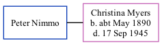

Peter Baxter Nimmo
[
Home
] | [
Calendar
] | [
Surnames Index
] | [
Family History
]
Peter Nimmo
and married
Christina Myers
in 1909.
Family Tree

Generated by
ged2site
. Last updated on Nov 13, 2024